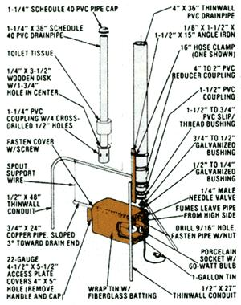

Mother's Motor Oil Recycler
You may never need to buy another quart of oil after building this handy contraption, including diagram, photographs, instructions.
By the Mother Earth News editors
January/February 1981
You may never need to buy another quart of oil, if you make . . .
We're sure no one has to be told that today's gasoline prices are astronomical . . . and if you've purchased a quart of oil lately, you also know that "highway robbery" doesn't stop at the pump. Well, in response to just such inflated costs, MOTHER researcher Dennis Burkholder (who was an old pro at watching his pennies even before the energy crisis) has come up with a dandy little device that allows him to recycle the lubricant in his car's crankcase . . . for less than the cost of a cup of coffee!
Dennis began using a prototype of his home oil reprocessor back in 1974, with excellent results . . . and figured that MOM's readers might appreciate being let in on his "secret". Of course, the inventive tinkerer scrounged a good many of the parts he used for his apparatus . . . but he calculates that, even if he'd purchasedmost of the components right from the hardware store, the total cost wouldn't have exceeded $15.
"It's really a snap to put together, since all the plumbing pieces were manufactured to fit each other," Dennis points out. "The only real fabrication involved is cutting the pieces to size, drilling holes where indicated in the illustration, and forming the 90° arc in the gadget's one long leg . . . which I did with a tubing bender, but it could be done-in a pinch-by merely hand-bending the material (carefully, to avoid causing any corner-weakening kinks). Also, I chose to weld all the legs to the angle iron support. However, anyone who doesn't have access to welding equipment could readily double-bolt each limb-including the curved one, after flattening its end and fitting it to one side of the angle-to the metal stanchion."
The actual filter element is nothing more than a roll of ordinary bathroom tissue, which is mounted on a "retrieving" pole and snugly fit into the 4" diameter PVC drainpipe. A center-drilled wooden disk serves as a support platform for the paper drum, yet is small enough to allow the lubricant to pass through the filter. Finally, an old floor wax can or biscuit tin is fitted with a porcelain light bulb socket, provided with an access hatch for globe-changing, and end-drilled so the whole affair can be slipped over the two-foot-long oil-exit tube.
Dennis emphasizes that his petroleum reprocessor isn't a refinery, but-by the same token-it is a good deal more effective than is a simple strainer. "The process starts when you pour the used motor oil into the opening of the large column. The lubricant passes through the layered roll of paper, at a speed that can be adjusted by the needle valve, and then drips into the inclined copper pipe . . . where the light bulb warms the insulated tin chamber surrounding that conduit section.
"Naturally, the heat is transferred to both the copper and the fluid passing within, and as a result of the 215°F temperatures achieved, water vapor and-of course-higher volatiles such as unburned gasoline are driven from the liquid and exit out the high end of the pipe as fumes. I've achieved my best processing results when operating the device with the control valve nearly shut to maintain a drip... simply because both the filter and the evaporator are then given more time to work."
The researcher has also discovered that a 60-watt bulb may not provide enough heat to maintain the necessary temperature (above the boiling point of water) in the vaporizing chamber . . . especially if the apparatus is used in an extremely cold garage. So, if your work area is especially chilly, he suggests you use a 75-watt lamp.
Despite its "Rube Goldberg" appearance, the inexpensive device has proved to be fairly effective. We sent "before" and "after" crankcase oil samples to an independent petroleum analysis laboratory, and the results-though not earth-shattering-indicated that the homebuilt recycler did an adequate job.
For instance, wear-causing iron, silicon, and chromium particles were reduced by 31, 7.4, and 16.6%. respectively. At the same time, the concentrations of some beneficial additives-including magnesium, boron, and phosphorous detergents-increased to the tune of between 200 and 389% . . . while the Total Acid Number (a measure of low pH) decreased by 9.2%, probably as a result of the alkaline effect of the detergents. (We attribute these "bonus" figures to the substances put in the toilet tissue during its manufacture.) The final test showed that the viscosity was reduced by 10.4% . . . but it was still well within the acceptable limit, having an equivalent of about SAE 30W.
Dennis prefers to recycle the oil from his own vehicles, rather than collect "strange" lubricant from the service station (where it may contain higher levels of dirt, antifreeze, and gasoline than does his "used" lubricant). But either way, he's saving cash with his T.P. reprocessor . . . and further pinches his pennies by not changing the paper till the device becomes hopelessly clogged!
 |
 |
|